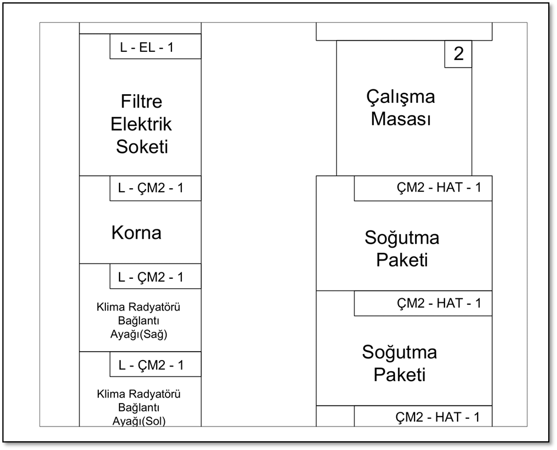

Uygulama
AutoCAD Layout Çizimi
Projemizin başlangıç aşamasında, TLB Montaj Hattı’nda ekibimiz operasyonel prosedürler ve hattın fiziksel düzeni hakkında kapsamlı bir araştırma gerçekleştirdi. Montaj hattının iş akışını, görev dağılımlarını ve alt gruplar arasındaki genel ilişkileri anladık. Hattın düzeninin doğru bir şekilde temsil edilmesini sağlamak amacıyla her alt grubun özelliklerini ayrıntılı bir şekilde ölçtük ve kaydettik. Bu ölçümleri AutoCAD yazılımını kullanarak, montaj hattının mimarisinin resmini veren kapsamlı ve ölçeklenebilir bir düzen haline getirdik.
Taslak çizim süreci tamamlandıktan sonra, dikkatimizi her alt gruba dahil edilen ürünlerin yakından analizine çevirdik. Kaynak tahsisini en üst düzeye çıkarmak ve fazla stokları azaltmak amacıyla, TLB iş makineleri ürünlerinin kullanım detaylarına girdik. Her makine operasyonu için gereken ürün sayısını belirledik ve bu sayede envanter yönetimine yönelik bilgili bir yaklaşım sağladık. Her prosedürde kullanılan her ürünün kesin miktarını bilmek, amacımız olan ürünleri taşımak için kit arabaları kullanarak alan verimliliğini en üst düzeye çıkarmak için kritik öneme sahipti.
Analiz kısmında, başlangıçta alt grupları ayrıntılı bir şekilde inceledik. Her alt gruptaki operasyonlar ve montaj süreçlerini kısaca tartıştık. Montaj süreçlerine ek olarak, her alt grupta herhangi bir iş sağlığı ve güvenliği ihlali, WCM uygulamaları ve NVAA gözlemlerini belirledik. Ardından, her alt gruptaki her ürünün ayrıntılı bir analizini gerçekleştirdik ve ürün akışını tanımlayan bir bölümü düzene ekledik. Alt grupları ayrıntılı bir şekilde inceledikten sonra, montaj hattındaki operasyonları ve aralarındaki bağlantıları bir diyagramda kısaca sunduk.
Alt Grup Analizi
Valf ve Şase
Büyük ve küçük valf alt gruplarının montaj işlemleri tamamlandıktan sonra, bu parçalar şasi alt grubuna getirilir ve şasiye monte edilir. Bu işlemlere ek olarak, ön ve arka aksların montajı da gerçekleştirilir.
Yorumlarımız:
2WS arka aksların 4WS akslara benzer şekilde açık palet içinde gelmesi ve operatörün paketleri açması sırasında zaman ve işgücü kaybı yaşanması.
Şasinin montaj alanına çekilmesi sırasında zaman ve işgücü kaybı.
Operatörün hem dengeleyici hem de şasi alt gruplarında çalışmasına rağmen, alanlar arasında mesafe sorunu bulunması.
Büyük valfin monte edilmiş formunun şasi alt montaj alanına getirilmesi sürecinde operatörün itmesi nedeniyle işgücü kaybı.
Montaj çalışma istasyonu ile alet takımı arasındaki mesafe nedeniyle fazla adım atılması.
4WS ve 2WS akslar arasında sürekli değişim nedeniyle bekleme süresi kaybı yaşanması.
Ön Yükleyici
Bu alt grup, ön yükleyici montajından, lastik ve kabin montajından sorumludur. Montaj süreci, ağırlıklı olarak üst ve alt silindir pistonlarını içerir. Montaj çalışma masasında tamamlandığında, operatör bitmiş ürünleri ilgili mobil istasyona gönderir.
Yorumlarımız:
Ön yükleyici montajında, yükleyici kaldırılıp montaj masasına taşındığında katma değeri olmayan zaman oluşuyor.
Pistonları ön yükleyici kit tedarik arabasına yerleştirerek çalışma alanından çıkarabiliriz, böylece katma değeri olmayan zamanı ortadan kaldırmış oluyoruz.
Ön yükleyici alt grubunda kullanılan alet takımlarını montaj tezgahına daha yakın bir yere taşıyarak katma değeri olmayan zamanı ortadan kaldırabiliriz.
Hidrolik Yakıt Tankı
Hidrolik yakıt tankı ve kaput montaj aşamaları bu alt grupta gerçekleştirilir. Kit alanından gelen yarı mamul ürünün temel parçaları masada monte edildikten sonra montaj için ilgili bekleme alanına taşınır. Gerekli olduğunda montaj işlemi montaj hattında tamamlanır. Sınırlı alan nedeniyle de ön yükleyici parçaları kaput alt grubunda stoklanmaktadır.
Yorumlarımız:
Hidrolik ve yakıt tankı, yükseklik ayarlanabilir bir tezgah ile monte edilmelidir.
Hidrolik tankın alt cıvataları sıkılırken işlem vinç altında gerçekleştirilebilir.
Montaj masasının üzerinde hava tabancasını asmak için belirlenmiş bir yer sağlanmalıdır.
Cıvataların ve aletlerin operatörün el seviyesinde olması için bir yükseltici yapılabilir.
Soğutma Paketi
Soğutma paketi bileşenlerinin montajı bu alt grupta gerçekleştirilir. Bu montaj için birçok farklı parça kullanılır. Çalışma masası 2’nin yakınında, montaj hattına gönderilmeyi bekleyen üç hazır soğutma paketi bulunmaktadır. Her TLB için bir soğutma paketi kullanılmaktadır (yani, günde bir tane). Alt grubun mevcut düzeni göz önüne alındığında, hazır birimlerin gerekenden daha fazla yer kapladığı söylenebilir.
Motor Şanzıman
Arka Tabla
Bu alt grupta arka tabla montajı gerçekleştirilmektedir. Arka tabla kit bileşenleri ve arka tabla silindiri, pistonlarla birlikte masada monte edilir. Daha sonra, montaj makinesinde panel ve dönüştürücüyü pimlerle birleştirmek için besleme alanından döner kule kullanılır. Makineden çıktıktan sonra, arka tabla dengeleyici takılarak bekleme alanına gönderilir.
Yorumlarımız:
Arka tabla kit bileşenlerinin ve pistonlarının masadan uzakta olması verimlilik sorunlarına ve zaman kaybına neden olmaktadır.
Pistonlar için mühürlü karton paketlerin açılması, potansiyel olarak gecikmelere ve üretkenlikte aksamalara yol açmaktadır.
Pistonların kaldırılması ve döner kulenin montaj alanına getirilmesi sırasında İSG riski oluşmaktadır.
Bu alt gruba ait olmayan batarya ve motor gibi ürünlerin bu alanda beklemesi, karışıklığa ve verimsizliğe neden olmaktadır.
Malzeme Analizi
Gördüğümüz tüm ürünleri ayrıntılı olarak listelemedik çünkü her aşamada kullanılabilecek somun, vida gibi küçük bileşenler mevcut. Bu tür ürünleri ‘raf’ olarak belirledik. Ayrıca, her ürünün sağ üst köşesine yerleştirdiğimiz bölüm, ürünün nereden geldiğini ve nereye gittiğini gösteren akışı açıklamaktadır.
Örnekte görüldüğü gibi, ‘L’ ürününün lojistik tarafından sağlandığı belirtilmiştir. Ardından, montaj işleminin yeri açıklanmıştır. Kornaya ait örneğe bakıldığında, montaj işleminin ‘CM2’ olarak etiketlenen 2 numaralı çalışma istasyonunda gerçekleştiği gözlemlenmektedir. Sonundaki sayı, işlem başına ürün kullanım miktarını temsil etmektedir.

Zaman Etüdü
Zaman çalışmaları sırasında hem alt grupları hem de bireysel istasyonları inceledik. Ancak, operatörler tarafından gerçekleştirilen görevler oldukça zaman alıcıydı. Bu uzun görev süresi nedeniyle, çalışmanın sınırlı zaman çerçevesi içinde her görev tamamlaması için birden fazla ölçüm toplamak mümkün değildi. Bu nedenle, ARENA simülasyon yazılımında bir parametre olarak düzenli dağılım seçildi ve potansiyel varyasyonları keşfetmek için farklı varyans katsayısı (VK) değerleri kullanan üç farklı senaryo çalıştırdık. Bu senaryoların detaylı bir incelemesi bir sonraki bölümde sunulmaktadır.
Model İçin Uygun Parametreyi Belirleme
Düzgün Dağılım
Düzgün dağılım, belirli bir aralık içindeki değerlerin eşit olasılıkla ortaya çıktığı bir olasılık dağılımıdır. Sonuçların eşit olasılıklı olduğu durumları modellemek ve verinin eksik olduğu durumlarda yaygın olarak kullanılır.
Düzgün dağılımın başlıca faydalarından biri, modelleme sürecini, hesaplamaları ve analizleri basitleştirmesidir. Zaman kısıtlamaları, mevcut verinin eksikliği ve montaj hattındaki işlemlerin belirli bir aralık içinde eşit dağılıma sahip olabileceği varsayımı nedeniyle düzgün dağılımı kullanmaya karar verdik. Dağılım [a, b] şeklinde ifade edilir, burada “a” minimumu, “b” maksimumu temsil eder. Teorik ortalama ve standart sapma için formüller şunlardır:
Varyans Katsayısı
Varyans katsayısı, bir veri setinin ortalamasına göre göreceli değişkenliğini değerlendirmek için kullanılan istatistiksel bir ölçümdür. Modelimizde VK’nın kullanılmasının amacı, Arena’da düzgün dağılımın parametreleri olarak hizmet edecek değerleri bulmaktır. Bu prosedürün temel felsefesi, VK’yı değiştirerek farklı senaryolar oluşturmaktır.
VK için formül:
Zaman çalışmalarımızdan elde edilen işlem sürelerini ortalama değerler olarak düşüneceğiz. Sonuç olarak, farklı senaryolar için CV değerleri de bilindiğinden, Arena modelinde kullanılmak üzere her istasyon ve alt grup için parametreler “a” ve “b” belirlenecektir.